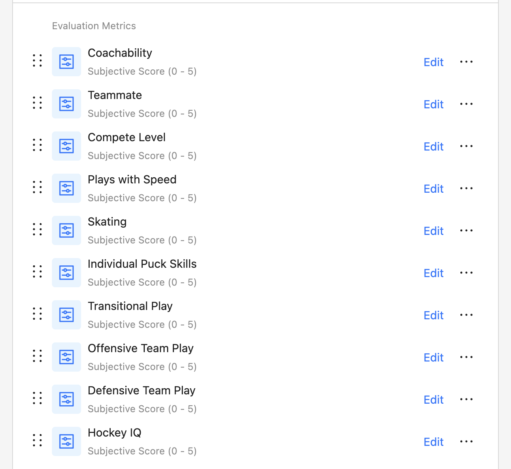
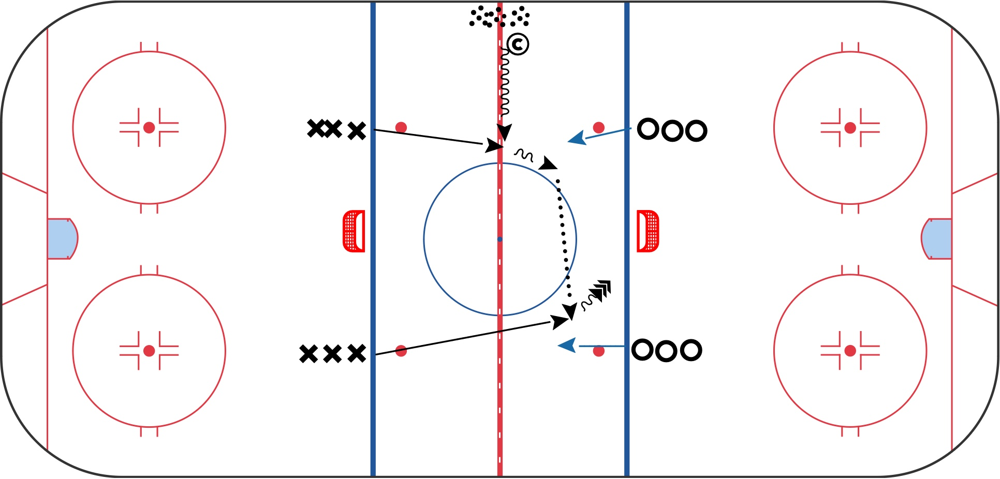
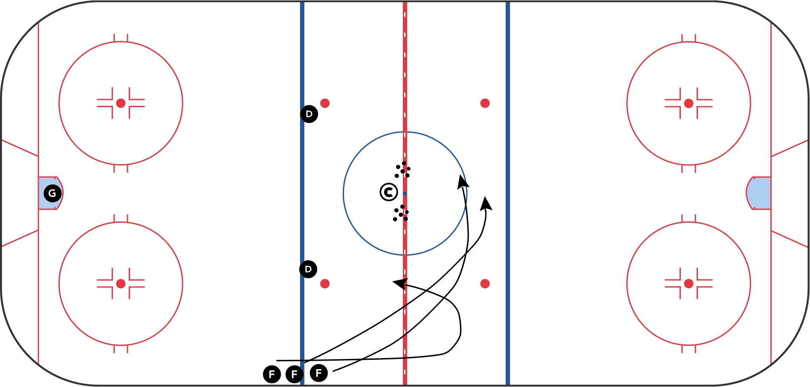
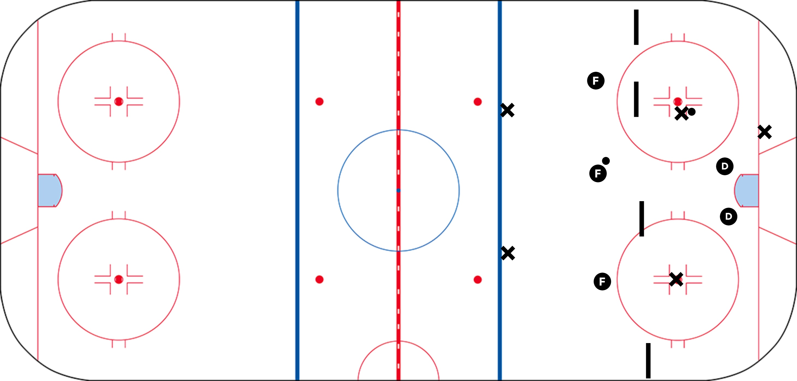
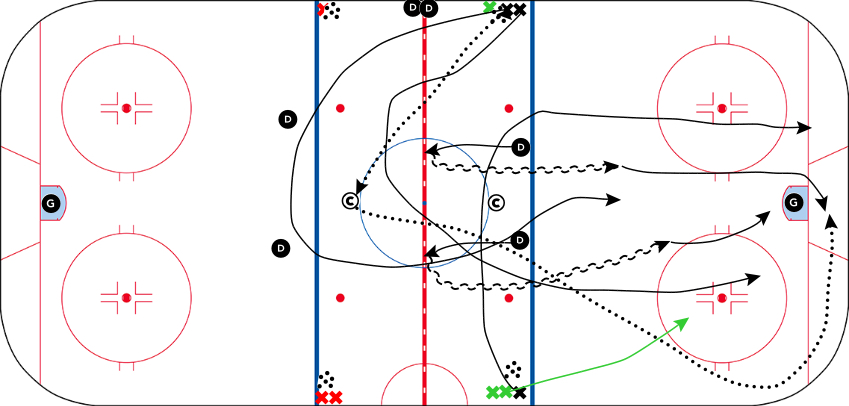
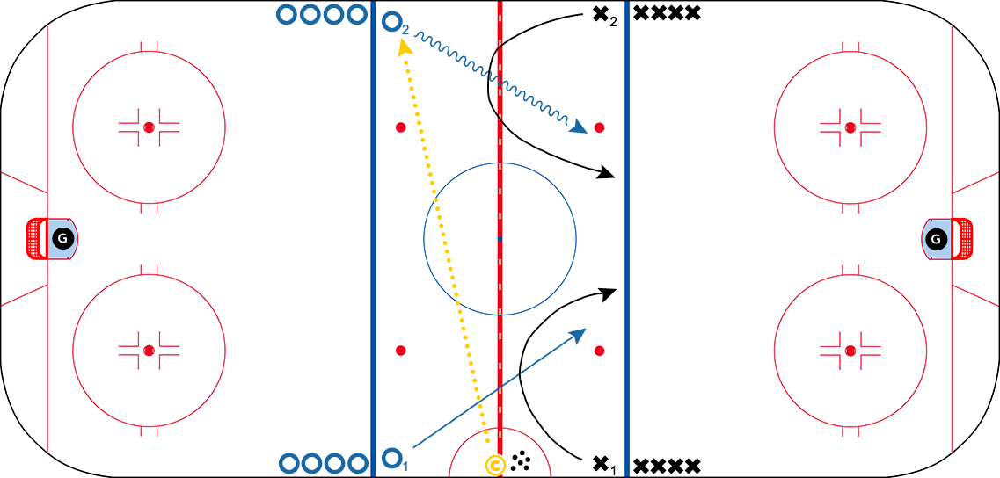

Platform
SkillShark evaluation template with ten metrics, each a subjective score from 0 to 5.
Hockey Canada High Performance 1 | Section C
Assess every player, find the team's gaps, and plan three practices to close them
Our association (Oakville Hornets) evaluates every player using SkillShark, a digital evaluation platform. Evaluators score each player on the same ten metrics, using one shared description and one shared scale, so every rating means the same thing no matter who gives it. The scores show the team's strongest and weakest areas, and the weakest areas drive the three practice plans below. The same evaluation is repeated at midseason and season end to track each player's progress in their PDP.
SkillShark evaluation template with ten metrics, each a subjective score from 0 to 5.
Every metric has a written definition and the same 1-5 rating anchors, so evaluators score against a shared standard.
The metrics cover character, skating and skill, team play, and hockey sense, matching the technical, tactical, physical and mental pillars.
Player-by-player SkillShark reports are submitted directly to the evaluator and are not published on this page.
Each metric below uses our association's SkillShark definition. The tag on each card shows which HP1 competency the metric connects to.
Below is our evaluation template in SkillShark, with the ten metrics set up as subjective 0-5 scores. Evaluators score each player against every metric during the evaluation sessions.

Illustration only, no real player data.
Start-of-season SkillShark evaluation, all 20 rostered players scored on every metric. Players are shown by code only.
Sample data shown to illustrate the evaluation-to-practice process. Scores are each player's average across evaluators.
20 12 forwards, 6 defence and 2 goalies, 100% fully scored.
3.65 out of 5 across all ten skater metrics.
Teammate 4.22 team average.
Transitional Play 3.31 team average; 8 of 18 skaters at 3 or below.
Highlighted: the three lowest team averages, which become the focus of the three practices below.
| Player | Pos | COA | TM | CMP | SPD | SKT | PCK | TRN | OTP | DTP | IQ | Avg |
|---|---|---|---|---|---|---|---|---|---|---|---|---|
| Forwards (12) | ||||||||||||
| P02 | F | 4 | 4 | 3 | 4 | 4 | 4 | 3.5 | 3.5 | 3.5 | 4 | 3.75 |
| P04 | F | 4 | 4 | 3.5 | 4 | 4 | 4 | 3.5 | 4 | 3.5 | 3.5 | 3.80 |
| P06 | F | 4.5 | 5 | 3.5 | 4 | 4.5 | 4 | 4 | 4 | 4 | 4 | 4.15 |
| P08 | F | 4 | 4 | 3.5 | 4 | 4 | 3.5 | 3.5 | 4 | 3.5 | 4 | 3.80 |
| P09 | F | 3.5 | 4 | 3 | 3.5 | 3.5 | 3.5 | 3 | 3 | 3 | 3.5 | 3.35 |
| P10 | F | 4.5 | 5 | 4 | 4 | 4 | 3.5 | 4 | 3.5 | 4.5 | 4 | 4.10 |
| P11 | F | 4 | 4.5 | 3.5 | 3.5 | 3 | 3 | 3 | 3 | 3 | 3.5 | 3.40 |
| P14 | F | 3.5 | 4.5 | 3.5 | 4 | 4 | 3.5 | 3.5 | 4 | 3.5 | 4 | 3.80 |
| P15 | F | 3 | 4 | 3.5 | 3.5 | 4 | 3 | 3 | 3 | 3 | 3 | 3.30 |
| P17 | F | 3.5 | 4 | 3.5 | 4 | 4.5 | 4 | 3.5 | 3.5 | 3.5 | 3.5 | 3.75 |
| P18 | F | 4 | 4 | 3.5 | 4.5 | 4.5 | 3.5 | 3 | 3 | 3.5 | 3.5 | 3.70 |
| P20 | F | 3.5 | 4 | 3.5 | 4.5 | 5 | 4 | 3.5 | 3 | 3 | 3.5 | 3.75 |
| Forwards average | 3.83 | 4.25 | 3.46 | 3.96 | 4.08 | 3.62 | 3.42 | 3.46 | 3.46 | 3.67 | 3.72 | |
| Defence (6) | ||||||||||||
| P03 | D | 4.5 | 4.5 | 3 | 3.5 | 4 | 3 | 3 | 3 | 3.5 | 3 | 3.50 |
| P05 | D | 4 | 4 | 3.5 | 4 | 4 | 3.5 | 3.5 | 3.5 | 3.5 | 3.5 | 3.70 |
| P07 | D | 4 | 4 | 4.5 | 4 | 4 | 3.5 | 3.5 | 3.5 | 4 | 3.5 | 3.85 |
| P13 | D | 3.5 | 4.5 | 2.5 | 3 | 3 | 2.5 | 2.5 | 2.5 | 3 | 2.5 | 2.95 |
| P16 | D | 3.5 | 3.5 | 3 | 3.5 | 4 | 3 | 3 | 3 | 3 | 3 | 3.25 |
| P19 | D | 4.5 | 4.5 | 3 | 4 | 4.5 | 3.5 | 3 | 3.5 | 3.5 | 3.5 | 3.75 |
| Defence average | 4.00 | 4.17 | 3.25 | 3.67 | 3.92 | 3.17 | 3.08 | 3.17 | 3.42 | 3.17 | 3.50 | |
| Team average | 3.89 | 4.22 | 3.39 | 3.86 | 4.03 | 3.47 | 3.31 | 3.36 | 3.44 | 3.50 | 3.65 | |
COA Coachability · TM Teammate · CMP Compete Level · SPD Plays with Speed · SKT Skating · PCK Individual Puck Skills · TRN Transitional Play · OTP Offensive Team Play · DTP Defensive Team Play · IQ Hockey IQ
| Goalie | Stance & Positioning | Crease Movement | Rebound Control | Save Technique | Tracking | Puck Handling | Battle / Compete | Coachability | Mental Toughness | Teammate |
|---|---|---|---|---|---|---|---|---|---|---|
| P01 | 3.5 | 3.5 | 3.5 | 3.5 | 3.5 | 3 | 3 | 4 | 3 | 4.5 |
| P12 | 3.5 | 3.5 | 3.5 | 3.5 | 3.5 | 3 | 4 | 4 | 4.5 | 4.5 |
| Average | 3.50 | 3.50 | 3.50 | 3.50 | 3.50 | 3.00 | 3.50 | 4.00 | 3.75 | 4.50 |
Lowest goalie average: Puck Handling / Playmaking. Goalie puck-handling reps are built into Practice 1.
The three lowest team averages from Evaluation #1 become the focus of the three practices. Plays with Speed and Individual Puck Skills (3.86 and 3.47) are next, and are reinforced inside these practices.
Transitional Play · team avg 3.31
Part of the definition we targetQuick recognition of turnovers and first passes or controlled carries under pressure.
What the evaluation showedPlayers were slow to react when possession changed, and first passes after a turnover were often forced or late. Support for outlets was inconsistent. 8 of 18 skaters scored 3 or below.
Addressed inOffensive Team Play · team avg 3.36
Part of the definition we targetPuck support, finding open ice and being a threat to shoot or pass.
What the evaluation showedAway from the puck, players stood still instead of supporting. Entries were one-player plays and possession ended after the first pass. 8 of 18 skaters scored 3 or below.
Addressed inCompete Level · team avg 3.39
Part of the definition we targetEngagement in battles, winning pucks, body position and consistency of effort.
What the evaluation showedEffort dropped in board battles and around the net. Several players lost body position and gave up on second efforts. 6 of 18 skaters scored 3 or below.
Addressed inEach practice targets one deficiency and moves from skill isolation to game application. Drills with diagrams come from our association's CoachThem drill bank.
Raise the team average in Transitional Play at the midseason SkillShark evaluation and cut the number of skaters scoring 3 or below (8 of 18 now).
| Time / Phase | Drill | Diagram | Description & Organization | Key Teaching Points |
|---|---|---|---|---|
| 0:00-0:10 Warm-up / Activation | Partner passing in motion, then goalie puck-handling station | Coach-led, no diagram | Pairs skate the neutral zone making forehand and backhand passes in stride. Goalies stop rims behind the net and set the puck for the D (goalie puck-handling gap). |
|
| 0:10-0:22 Skill Isolation | 2v0 Continuous Backcheck |  CoachThem drill | Pairs attack 2v0 off a coach pass and stop at the net; the next pair leaves on the whistle and the first pair turns and backchecks. Every rep is a change of possession. |
|
| 0:22-0:34 Skill Progression | Turn and Burn |  CoachThem drill | Three forwards skate around the coach, pick up a spotted puck and attack 3-on-2. Part 2: the coach carries a puck into the neutral zone, the forwards track and strip it, then attack the original D again. |
|
| 0:34-0:46 Small-Area Game | Tracking and Sort Out 3v2 |  CoachThem drill | 3v2 below the hash marks. On the whistle the three forwards break out 3v2 the other way, and the three who were defending must backcheck and sort out their checks. |
|
| 0:46-0:56 Team Application | Turnover to rush, 5v5 controlled scrimmage | Coach-led, no diagram | Coach dumps a loose puck on every whistle; the team that recovers must make a first pass within 3 seconds. Goal only counts if it comes from a transition rush. |
|
| 0:56-1:00 Cool-down & Debrief | Easy skate and one-question debrief | Coach-led, no diagram | Ask: what did we do in the first three seconds after we won the puck? |
|
Raise the team average in Offensive Team Play at the midseason SkillShark evaluation and cut the number of skaters scoring 3 or below (8 of 18 now).
| Time / Phase | Drill | Diagram | Description & Organization | Key Teaching Points |
|---|---|---|---|---|
| 0:00-0:10 Warm-up / Activation | Give-and-go passing lines into shots | Coach-led, no diagram | Players pass to a coach or partner, skate to open ice for the return and shoot in stride. |
|
| 0:10-0:22 Skill Isolation | F1 to F3 Rotation for the Quick Shot |  CoachThem drill CoachThem drill | Continuous: F1 retrieves and hits F2 below the goal line, then races through the middle to the high F3 spot for a pass and quick shot from the slot. |
|
| 0:22-0:34 Skill Progression | Half Ice Forecheck 3v2 |  CoachThem drill | Forwards dump the puck in, forecheck and recover it against two D, then turn the recovered puck into a scoring chance. |
|
| 0:34-0:46 Small-Area Game | 3v3 support game: two-touch rule | Coach-led, no diagram | Half-ice 3v3; each player may touch the puck twice. Forces constant support and movement to open ice. |
|
| 0:46-0:56 Team Application | Three-lane rush to net-front finish, 5v5 | Coach-led, no diagram | Breakout to a three-lane rush on every whistle. Goals count double if three players touched the puck in the offensive zone. |
|
| 0:56-1:00 Cool-down & Debrief | Easy skate and one-question debrief | Coach-led, no diagram | Ask: when did we keep the puck longest, and why? |
|
Raise the team average in Compete Level at the midseason SkillShark evaluation and cut the number of skaters scoring 3 or below (6 of 18 now).
| Time / Phase | Drill | Diagram | Description & Organization | Key Teaching Points |
|---|---|---|---|---|
| 0:00-0:10 Warm-up / Activation | Edge work, stops and starts, then 1v1 puck-protection circles | Coach-led, no diagram | Tight turns and stops at each dot, then partners protect a puck inside a faceoff circle for 20 seconds each. |
|
| 0:10-0:22 Skill Isolation | 1v1 Corner Battle, 1v1 Box Out |  CoachThem drill CoachThem drill | Coach dumps a puck to the corner: D and F battle 1v1 to a goal or stoppage. A second puck goes to the point and the same pair battles for net-front position while the D shoots. |
|
| 0:22-0:34 Skill Progression | Brad Shaw: Lemaire 2v2 N-Zone Angling |  CoachThem drill | Coach passes to any of four players on the boards; that pair attacks while the other pair skates forward 100% to angle and check. Every change of possession flips who attacks. |
|
| 0:34-0:46 Small-Area Game | Giancola: 3v2 D Zone |  CoachThem drill CoachThem drill | Three forwards try to keep the puck low; the D pair and centre work together (man on, box behind) to win it and skate it out. |
|
| 0:46-0:56 Team Application | Puck-battle scrimmage | Coach-led, no diagram | Half-ice 3v3: every puck starts in a corner battle. Points for battle wins as well as goals. |
|
| 0:56-1:00 Cool-down & Debrief | Easy skate and one-question debrief | Coach-led, no diagram | Ask: what helped you win more battles today? |
|